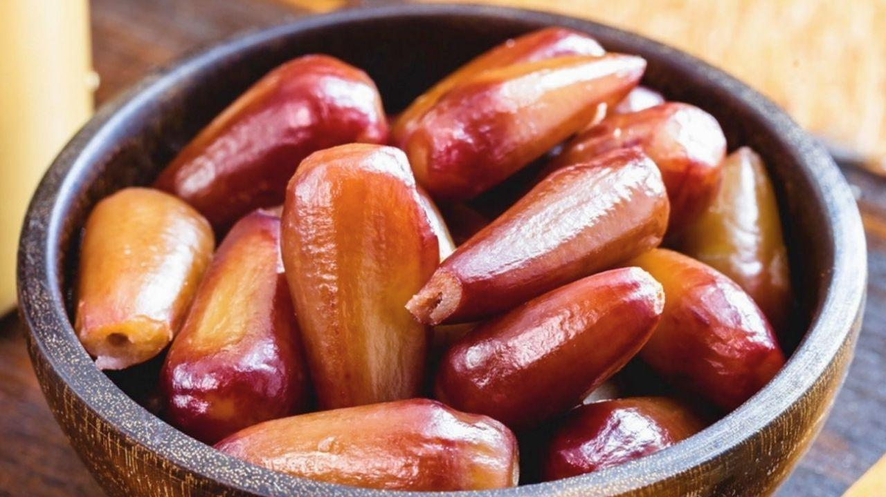
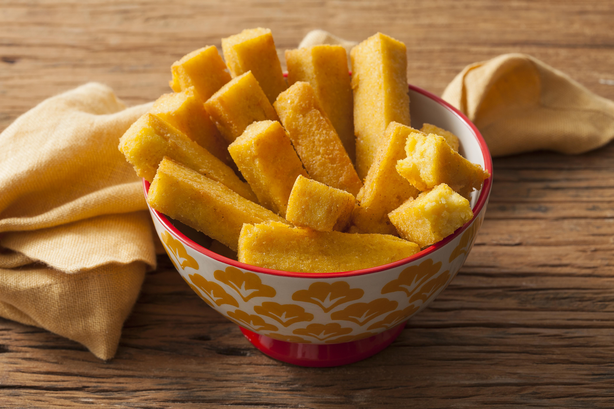
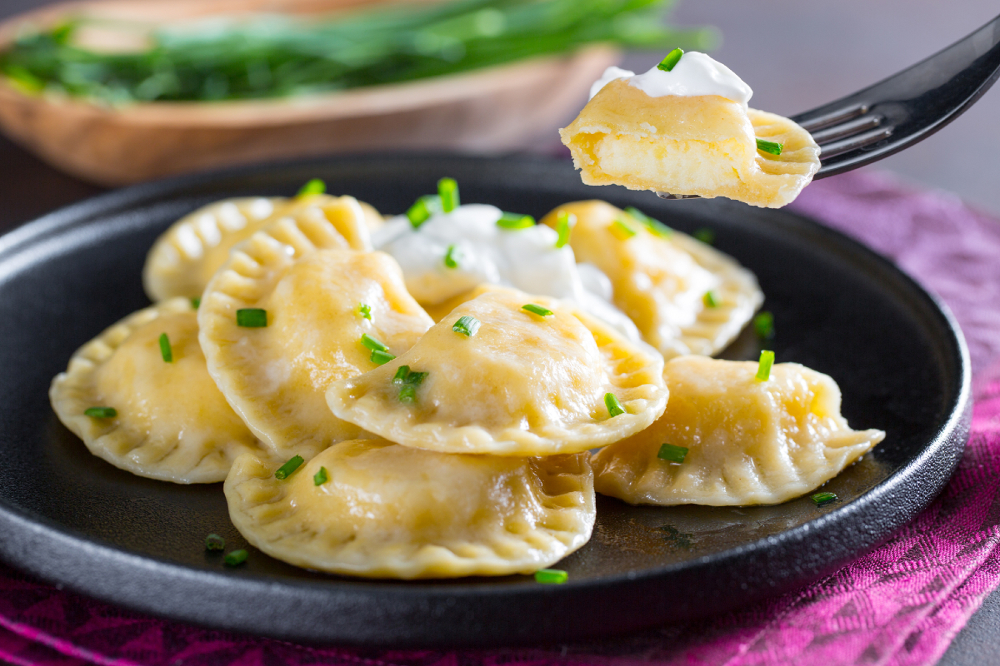

Pinhão cozido
Semente da araucária, típica dos meses frios, servida quente com sal.
Sabores que contam a história dos imigrantes que formaram a cidade.

Semente da araucária, típica dos meses frios, servida quente com sal.

Acompanhamento tradicional dos restaurantes de Santa Felicidade.

Massa recheada herdada da imigração polonesa e ucraniana.